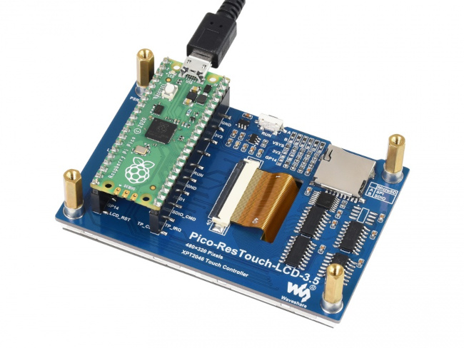

Some thoughts on the Waveshare 3.5-inch LCD/SD module for the Raspberry Pi Pico
 The Waveshare 3.5" Pico LCD module is a convenient
and inexpensive way to add a useable screen to the Pi Pico. In the UK,
the single-unit price of this device can be less than £20.
The unit includes an SD card interface and a resistive touch digitizer.
The screen resolution is 320x240 pixels, which makes it usable for displaying
text and menus -- provided the operator isn't too far away. This collection
of features is ideal for implementing equipment that displays data or
images from an SD card.
The Waveshare 3.5" Pico LCD module is a convenient
and inexpensive way to add a useable screen to the Pi Pico. In the UK,
the single-unit price of this device can be less than £20.
The unit includes an SD card interface and a resistive touch digitizer.
The screen resolution is 320x240 pixels, which makes it usable for displaying
text and menus -- provided the operator isn't too far away. This collection
of features is ideal for implementing equipment that displays data or
images from an SD card.
Note:
This article is specifically about the Waveshare 3.5" LCD panel with 320x240 pixel resolution and 16-bit colour. There are similar-looking devices with completely different interfaces, and nothing I write in this article should be assumed to apply to those. Sorry.
Waveshare provides very little information about programming the LCD unit in C, although there is source for a sample application (which did not work for me). In this article I will try to provide some of the missing information, and give an honest appraisal of whether the LCD panel is a worth using. Of course, it has to be kept in mind that it's very cheap -- it's rather hard to find serious fault with something that offers so many features at such low cost. Still, it isn't perfect, by any means.
Layout and construction
The LCD module connects directly to the Pico without a cable, as shown in the photo below.

This makes for a neat arrangement, when it comes to desktop experimentation. It's not particularly easy, however, to mount the display in a case. It's particularly awkward if you want to use the Pico's USB socket, which points upwards from the top of the board. You don't have to power the unit using a USB cable, but it's worth bearing in mind that the LCD module is a 5V device, not a 3.3V device as the Pico itself is. Note that the SD card slot also points upwards. I imagine that the SD slot could be used with an SD extender cable, if this mounting position proved to be inconvenient. At the sort of bus speeds an Pico can manage, I guess that wiring the SD card a few inches from the board won't be a problem.
The LCD module displays pixels right up to its very thin bezels -- up to a couple of millimetres from the edges of the module, in fact. If you wanted to mount the display in a case, you'd need a very accurate panel cut-out.
With the Pico in position, the complete assembly is about 20 mm thick, 58mm tall, and 86mm wide.
It's worth bearing in mind that, despite the overall design, the LCD module is not a landscape-orientation module. It's a portrait module, rotated through ninety degrees. Is this a problem? For many applications, no, it won't be -- so long as you're careful how you interpret the controller datasheet. In the datasheet, 'width' denotes the short side of the display, as if it were in portrait orientation.
This layout does create some subtle problems, however, particularly related to scrolling. I will return to this point later.
General design
The LCD panel has a 16-bit parallel interface. This is highly appropriate as it uses a 16-bit colour format (more on this later). However, to minimize the number of Pico GPIO pins that are used, the hardware includes an SPI interface to the panel controller and, so far as I know, SPI is the only way to drive the display.
The Waveshare documentation refers to both the Ilitek ILI9388 and the Sitronix ST7789 LCD controller ICs. I do not know which of these is actually used or if they are, in fact, equivalent. Looking at the datasheets of both, they seem very similar, with the same registers and commands. The ILI9388 claims 24-bit colour support while the ST7789 has only 18-bit. But, with a 16-bit LCD panel, the distinction is, perhaps, unimportant. I referred to the ST7789 datasheet in my own development -- and you'll certainly need a datasheet for any serious application.
The SD card interface is also connected to the SPI bus, although the card's SDIO pins are maybe also connected to Pico GPIO pins. This means that, in principle, you could operate the SD card in the, much faster, SDIO mode, rather than using plain SPI. However, I am not sure that anybody has actually succeeded in interfacing the Pico with an SD card in this mode -- the Waveshare sample code does not do so.
Note:
There are jumpers on the LCD module board that appear to control whether the SD card uses SPI or SDIO mode. I presume that, in the SPI position, the SDIO pins on the SD card are not connected to GPIO pins, so these pins could be used for something else. However, I haven't tested this, so I can't be sure. None of the board jumpers -- of which there are quite a few -- appear to be documented.
The SD card slot does not include a media detection function, so far as I can see. So the only way to detect whether a card has been inserted or removed is to try read it, and see what happens.
The touch digitizer controller is an XPT2046, again on SPI. It only has five-bit position resolution so, even with calibration, won't detect the exact pixel where a touch occurred. It's a resistive sensor, and fairly slow to respond.
All three SPI devices use the same SPI bus (SPI-1) on the Pico. As a result, three GPIO pins are dedicated to chip select functions. The touch controller also has an interrupt line which is connected to a GPIO pin, although I am not sure how it is expected to be used. There is also a GPIO pin for the screen backlight. As a result, the LCD/SD module uses a total of 15 GPIO pins.
The number of pins used might be moot, since there's no straightforward way to attach any other hardware to the Pico once it's connected to the LCD module.
LCD display
It goes without saying, at this price, that the display is a backlit IPS panel, and not a self-illuminating OLED or something similarly fancy.
The display contains its own memory -- two bytes for each pixel, thus totalling about 300kB. A problem should be immediately apparent -- this is larger than the Pico's RAM. There's no prospect of building up an image in RAM and then transferring it to the LCD in one operation -- there simply isn't enough RAM. However, it is possible to transfer data in regions of any size, and block-by-block is probably the best way to manage the display.
The basic method for setting a block of display memory is as follows. (1) Set the starting column and ending column registers; (2) set the starting line and ending line registers; (3) send exactly enough 16-bit values to fill the screen region selected.
It should be obvious that the least efficient way to write the display is pixel-by-pixel. The Waveshare sample code shows this being done by selecting a 1-pixel region of screen and then writing a "block" of one 16-bit pixel colour value. I do not know if there is a faster way to set a single pixel than this. This requires a total of thirteen, byte-wide SPI operations, of which only two set the actual pixel colour. With an SPI bus speed of (say) 8 MHz, writing the entire display this way will take just under two seconds.
Transferring the data in blocks is more efficient, because the amount of SPI data to be sent is smaller, in proportion to the number of pixels. However, at 8 MHz, it's still going to take at least 300 msec to draw the entire display. And that's assuming that the data to be displayed is already neatly arranged in RAM somewhere -- which, of course, it won't be, because there isn't enough RAM.
The LCD display works best when reading pre-formatted data from the SD card directly to the display. By 'pre-formatted' I mean that the image to be displayed is exactly 480x320 pixels, and is in the expected 16-bit format. To be fair, I guess this is the kind of application the designers of the unit had in mind.
The colour format of the display is RGB565, that is, five red bits, six green bits, and five blue bits for each pixel. It's easy to convert to this format from more common colour representations although, of course, the bit-bashing takes time.
The LCD backlight, which can be turned on and off using the appropriate GPIO pin, is bright -- but not particularly even.
SD card
The SD card slot is connected to the same SPI bus, SPI-1, as the display, and this can't be changed. The Pico program selects which device to use by asserting the appropriate chip-select line (they are all active-low). In principle, operations on the SPI bus should be synchronized (e.g., using mutexes) if you're likely to be doing any kind of multi-tasking. I haven't tried this -- frankly, it seems altogether too scary.
SD cards are usually supplied pre-formatted as FAT or exFAT; there's plenty of information and sample code for using these formats with the Pico. I've done most of my testing using a SanDisk 16Gb card, and it works fine. If the application calls for the SD card to be changed at runtime, some fairly careful programming will be needed -- these cards have a fairly complex initialization sequence, that has to be repeated whenever a card is changed.
Reset button
Not a killer feature, but a convenient one: the LCD module has a handy reset button on the top edge. It stands a little proud of the edge of the display, which is something that will have to be taken into account if the display is mounted in a case.
Display scrolling
The built-in controller has hardware scrolling capabilities. However, this is where the limitation of using a portrait-format display in landscape mode is really obvious: the hardware scroller only works along the long axis of the display. That is, with the display mounted in landscape orientation, you'll only be able to scroll horizontally.
Of course, you can implement the scrolling yourself, by reading lines of the display and writing them at new positions. Unfortunately, this takes about three seconds to scroll the entire screen -- not at all practicable.
Still, if you can use it, the hardware scrolling is very fast. That's because it doesn't move any memory at all. All that happens is that the application controls what row in memory should be at the top of the display, and the controller starts drawing on the panel from that point. When it gets to the end of memory, the controller wraps around to the start. So scrolling is a "circular" operation: if you set the scroller's top line to the middle of memory, you'll see the data at the start of memory appear half-way down the screen, while the top of the screen shows the second half of the memory.
Managing scrolling this way is a head-scratcher for the application developer, but it's effective once understood. It's just a shame that hardware scrolling only works in portrait orientation -- something that is not at all clear in the advertising.
Speed considerations
In the end, I think speed is likely to be the deciding factor in whether this LCD/SD module is usable or not. Fundamentally, a display with ~160,000 addressable pixels and a serial SPI interface is just too big for the Pico. Not physically too big -- it's a good size for many applications -- but requiring too much data to be transferred. Since the display memory is larger than the Pico's RAM, the display will always have to be generated directly on the LCD module, unless you're doing something like a straightforward image dump from an SD card.
Because all the SPI interfaces (display, SD, touch digitizer) run on the same SPI bus, the selected bus speed will have to suit all the devices. Alternatively, the application could change the SPI bus speed according to the device that is to be used -- but this is potentially problematic, because the speed takes some time to settle.
According to the Waveshare documentation, the display should be able to handle a bus speed of 60 MHz. I'm not convinced that we can rely on SD cards to work at this speed. Some probably will, but I've seen cards that won't work reliably at more than about 1 MHz. The SanDisk cards I usually use are fine at 12.5 MHz, and probably fine at 20 MHz. I say 'probably' because sometimes the card will not initialize at this speed. It's conventional to do the first stage of SD initialization at a very low speed -- perhaps 400 kHz -- and then build up speed. However, even with this approach, I don't get perfectly reliable initialization with all cards when running at 20 MHz.
My usual speed for testing, which works fine with all the branded cards I've tried, is 12.5 MHz. This gives a maximum frame rate of about one frame per second, assuming that no calculation has to be done during the update. This is fine for drawing simple menus, and displaying text in a terminal-like way. I don't think it would be adequate for displaying a complex graphical user interface.
Even a trivial operation like setting the whole display to a single colour is time-consuming. The controller provides no way to do this except using the same SPI interface that is used to set specific pixels. The SPI functions provided by the Pico C SDK work best when transferring large blocks of data -- particularly when DMA can be used. However, you're never going to be able to transfer a whole screen-full of data, because the Pico doesn't have that much RAM. The C SDK doesn't provide a way to send the same value repeatedly using SPI, so even setting blocks the same colour requires an uncomfortable trade-off between RAM usage and speed.
Conclusions
The Waveshare 3.5" lCD/SD module has enough screen resolution for some fairly sophisticated displays -- provided you're not in too much of a hurry. With a display with this many pixels, speed is likely to be the limiting factor in usefulness.
The SD card interface works reliably at 12.5 MHz (that's 1 Mbit/sec or so), and reasonably reliably at 20 MHz. There's no media detection, so switching cards at runtime is likely to be a challenge for the programmer.
The touch digitizer is slow to respond, with a low-ish resolution. The module is supplied with a stylus, but I'm not sure that an application that needed the fine control of a stylus would work very well. It's fine for handling user interface buttons of fingertip size.
As I suggested at the start of this article, it's hard to fault something that offers the features of this unit at such a low price. The faults that it has are not in its implementation, but are likely inevitable when using such a high-resolution display with a controller with so little RAM. However, the lack of documentation doesn't make the developer's work any easier.